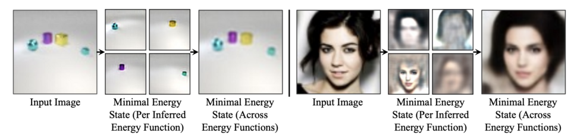
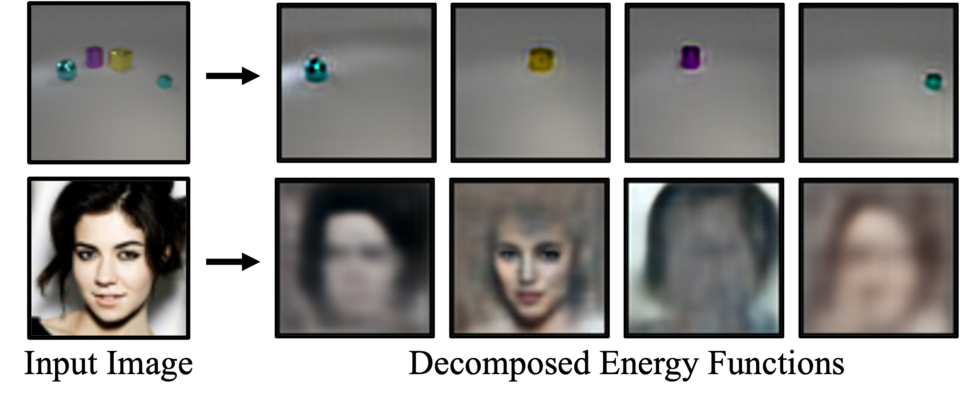
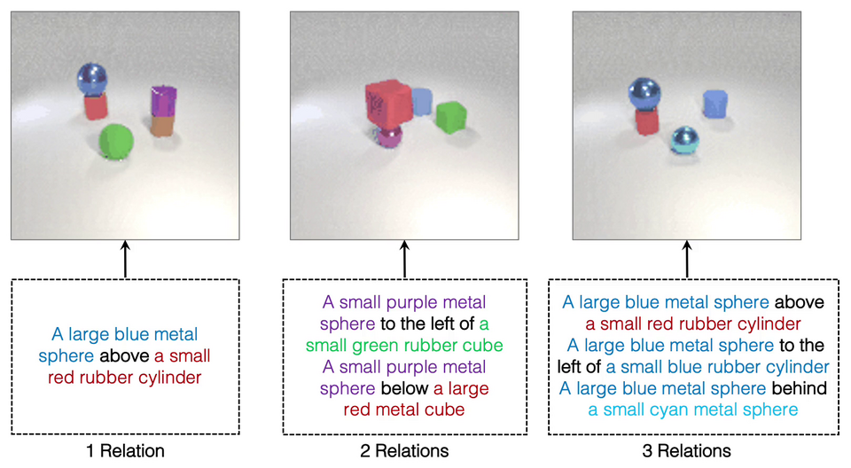
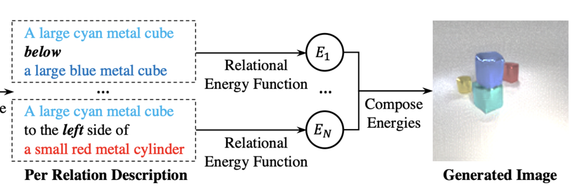
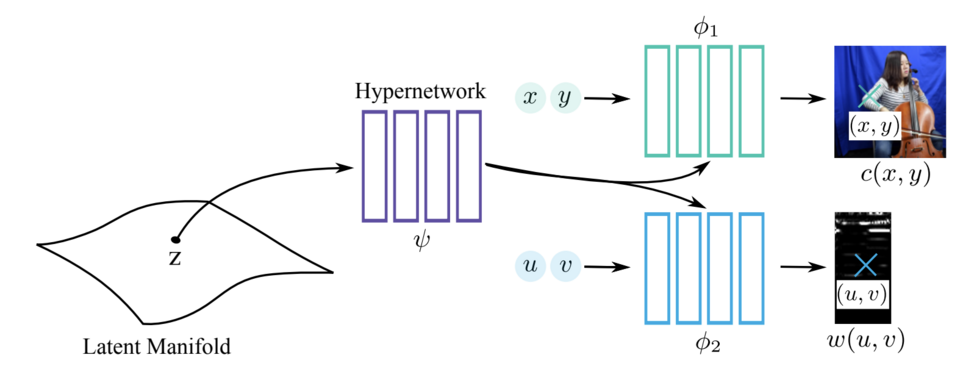

Unsupervised Learning of Compositional Energy Concepts
NeurIPS 2021
comet_teaser_preview.mp4
9 media files grouped by the listed publication venue and year.
9 of 9
NeurIPS 2021
comet_teaser_preview.mp4

NeurIPS 2021 · Alternate media
energy_unsup.png

NeurIPS 2021 · Alternate media
unsup_decomp.png

NeurIPS 2021 · Spotlight
relation.png
NeurIPS 2021 · Spotlight · Alternate media
relation.mp4

NeurIPS 2021 · Spotlight · Alternate media
visual_compose.png
NeurIPS 2021
gem_thumbnail.mp4

NeurIPS 2021 · Alternate media
manifold.png

NeurIPS 2021 Track on Datasets and Benchmarks
neural_mmo.jpeg
No matches.